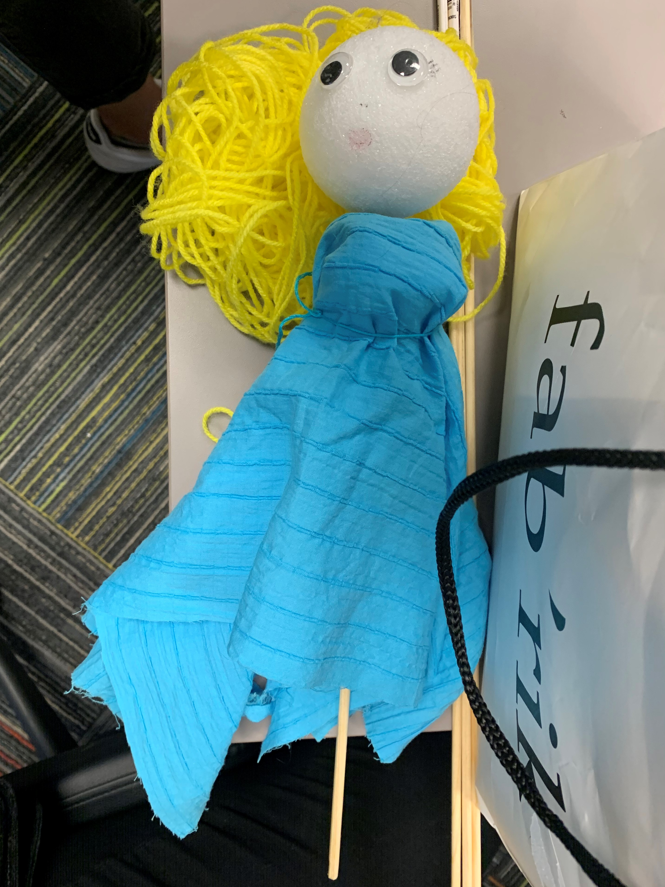
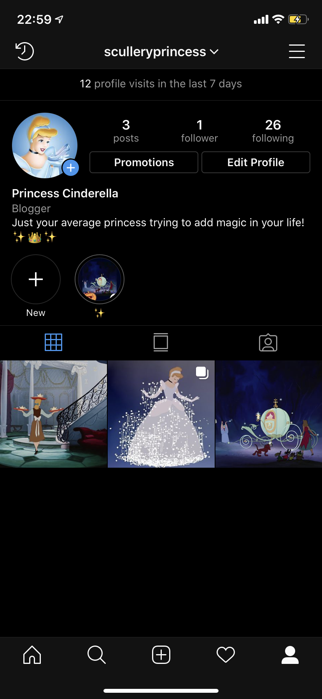
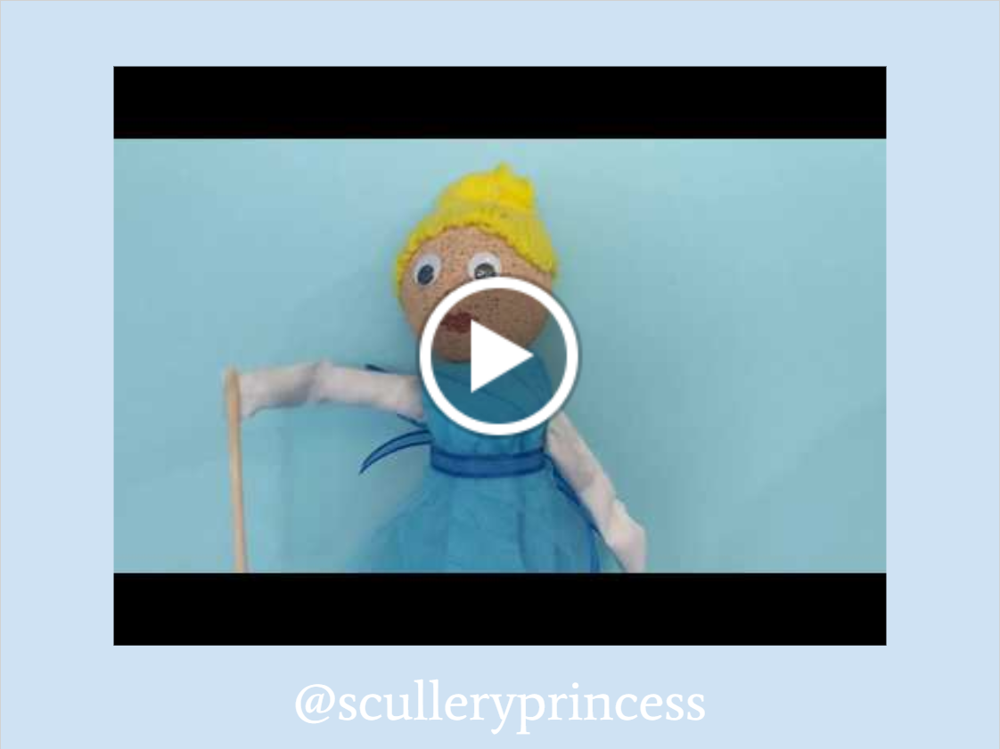

What if we explored the life of a Disney princess from a new lens? This was our vision as we developed our performance and chose to turn a Disney princess into an Instagram influencer. We would present a series of choices to our classmates, who would respond to polls on our princess's Instagram account. Thus, while we would have a general outline for our puppets' actions, our audience would be directing the performance.

An example princess (Mulan) and an example choice

Example scene flow
Planning out what Matierls to Get

Scene Ideas and the Theme of Losing Control
To achieve our idea, we needed a variety of physical puppets. We planned for two Cinderella puppets: one servant version, and one princess version. We used toilet paper rolls as the bodies, styrofoam balls as the heads, and wooden dowels as the rods (our control mechanism). Other supplies include cloth for dresses and yarn for hair.


Constructing our Cinderella Prototype
More Cinderella Construction


Cinderlla as a servant


Painting the styrofoam heads


We used bright yellow yarn to add hair to the Cinderella puppets, using the classic updo on the princess puppet.
We built 2D puppets out of construction paper for our supporting characters. This decision was not only based on time and resource constraints, but had performance implications as well. The center of attention in our performance is Cinderella and the way she allows her Instagram followers to control her, rather than simply basing her decisions on what's happening around her. Thus, it is appropriate that the people (and animals) around her should shrink in importance, allowing her Instagram to have a larger presence.

Cinderella's Friends: Birds and Mice
In the weeks leading up to our performance, we built a digital identity for our Cinderella including stories and posts.


Screenshots of the Instragram


An example poll
We created a flexible slide deck with images, text, and music to support our performance. This is our way of creatively engaging with the design challenge. For one, we avoided voice acting given that none of us had voice acting experience. Two, our audience would be directing the story. So, we made our performance into a silent film. We advanced through images interspersed with text that would give context to the story. Which text got displayed was determined based on the results of the Instagram polls. Each slide also had different music that matched the tone of the scene. We incorporated a "menu" slide where we clicked a symbol based on the poll results, pulling up the correct slide. Additionally, Cinderella's Instagram profile picture appeared in the corner of each slide when it was time for our audience to vote again.
A slide with Cinderella's Instragram handle, shown at the beginning so our audience members could become her followers and vote in her polls. They also watched an Intro video, setting the context for her "Instagram controls my life" day.
The Menu Slide - the four columns represent the 4 polls. We clicked on the top star if choice A was most popular, and on the bottom star otherwise, to advance to the correct slide.

The two different possibilities based on the first poll - Should I clean the fireplace or kitchen?
The choices become more high stakes as the performance goes on.